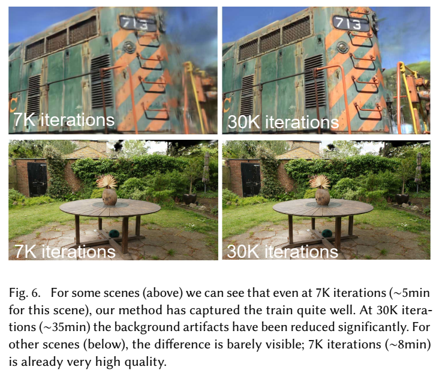
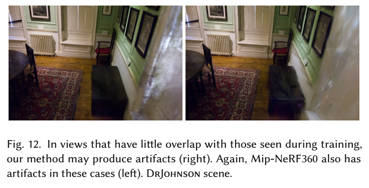

论文阅读三十一：3D高斯溅射用于实时辐射场渲染
辐射场方法最近彻底改变了用多张照片或视频捕获的场景的新颖视图合成。然而，实现高视觉质量仍然需要训练和渲染成本高昂的神经网络，而最近更快的方法不可避免地会以速度换取质量。对于无界和完全场景（不是独立物体）和1080p分辨率渲染，当前没有方法可以取得实时显示速率。我们引入三个关键因素，允许我们取得先进视觉质量，同时保持有竞争力的训练次数，并且重要的是，允许1080分辨率的高质量实时（ ）新颖视图合成。首先，从相机校准过程中产生的稀疏点开始，我们用3D高斯表示场景，该高斯保留了连续体积辐射场的理想特性，用于场景优化，同时避免了在空白空间中进行不必要的计算；其次，我们对3D高斯分布进行交织优化/密度控制，特别是优化各向异性协方差，以实现场景的精确表示；第三，我们开发了一种快速的可见性感知渲染算法，该算法支持各向异性溅射，既加快了训练速度，又允许实时渲染。我们在几个已建立的数据集上展示了最先进的视觉质量和实时渲染。论文地址
引言
网格和点是最常见的3D场景表示，因为它们是显式的，非常适合基于GPU/CUDA的快速光栅化。相比之下，最近的神经辐射场（NeRF）方法建立在连续场景表示的基础上，通常使用体积光线追踪（volumetric ray-marching）进来优化多层感知器（MLP），以实现捕获场景的新颖视图合成。类似的，迄今为止最有效的辐射场方案构建在连续表示，其通过插值存储在，对存储在象素[Fridovich-Keil 和 Yu 等人，2022 年]或哈希[Müller 等人，2022 年]网格或点[Xu 等人，2022 年]中的值进行插值。虽然这些方法的连续性有助于优化，但渲染所需的随机采样成本高昂，并可能导致噪声。我们引入了一种结合了两者优点的新方法：我们的3D高斯表示允许以最先进的（SOTA）视觉质量和有竞争力的训练时间进行优化，而我们的基于图块的飞溅解决方案确保在几个先前发布的数据集上以SOTA质量实时渲染1080p分辨率[Barron等人，2022；Hedman等人，2018；Knapitsch等人，2017]（见图1）。
我们的目标是对多张照片拍摄的场景进行实时渲染，并在典型真实场景中以与以往最高效方法同样快的优化速度创建表示。最近的方法实现了快速训练[Fridovich-Keil 和 Yu 等人，2022；Müller 等人，2022]，但难以达到当前 SOTA NeRF 方法（即 Mip-NeRF360 [Barron 等人，2022]）所获得的视觉质量，后者需要长达 48 小时的训练时间。快速但质量较低的辐射场方法可根据场景实现交互式渲染（每秒 10-15 帧），但无法实现高分辨率的实时渲染。
我们的方案构建在三个主要部分。我们从与之前类似NeRF的方法相同的输入开始，即使用运动结构（SfM）校准的相机[Snavely等人，2006]，并使用作为SfM过程一部分免费生成的稀疏点云初始化3D高斯集。与大多数需要多视图立体（MVS）数据的基于点的解决方案[Aliev等人，2020；Kopanas等人，2021；Rückert等人，2022]相比，我们仅使用SfM点作为输入即可获得高质量的结果。请注意，对于NeRF合成数据集，我们的方法即使在随机初始化的情况下也能实现高质量。我们表明，3D高斯是一个很好的选择，因为它们是可微的体积表示，但它们还可以高效光栅化，通过投影它们到2D，并应用标准 混合，使用等价的图像形成模型作为NeRF。我们方法的第二个部分是3D高斯属性的优化——3D位置、透明度 、 和球谐函数（SH）系数——与自适应密度控制步骤交错，其中我们在优化过程中添加和偶尔移除3D高斯。优化过程产生了一个相当紧凑、非结构化和精确的场景表示（所有测试场景有100万到500万高斯分布）。我们方法的第三也是最后元素是实时渲染方案，其使用快速GPU排序算法，并受到基于块（tile-based）光栅化的启发，遵循近期工作[Lassner & Zollhofer，2021]。然而，由于我们3D高斯表示，我们可以执行按照可见性排序的各向异性溅射，——归功于排序和 混合——并通过跟踪所需数量的排序溅射的遍历来实现快速准确的向后传递。
总之，我们提供以下贡献：
- 引入各向异性3D高斯作为辐射场的高质量、非结构化表示。
- 3D高斯属性优化方法，与自适应密度控制交错为捕捉的场景创建高质量表示。
- 快速可微GPU渲染方法，它是可见性感知，允许各向异性溅射和快速后向传播来获得高质量的新颖视角合成。
我们在之前发布的数据集上的结果表明，我们可以从多视图捕获中优化我们的3D高斯分布，并获得与之前最佳质量的隐式辐射场方法相同或更好的质量。我们还可以实现与最快方法类似的训练速度和质量，重要的是为新颖的视图合成提供了第一个高质量的实时渲染。
相关工作
我们首先简要概述传统重构，然后讨论基于点的渲染和辐射场工作，讨论它们的相似性；辐射场是广泛领域，因此我们仅侧重在直接相关的工作。有关该领域的完整报道，请参阅最近的优秀调查[Tewari等人，2022；Xie等人，2022]。
传统场景重构和渲染
第一个新颖视图合成方法是基于广场的，首先密集采样[Gortler等，1996；Levoy & Hanrahan 1996]，然后允许非结构化捕获[Buehler等，2001]。运动结构（SfM，Structure-from-Motion）的发展[Snavely 等，2006]实现一个完全新的领域，其中图像集可用于合成新颖试图。SfM在相机校准中估计稀疏点云，初始化用于3D空间的简单视觉。多年来，后续的多视图立体（MVS）产生了令人印象深刻的全3D重建算法[Goesele等人，2007]，从而开发了几种视图合成算法[Chaurasia等人，2013；Eisemann等人，2008；Hedman等人，2018；Kopanas等人，2021]。所有这些方法再投影和混合输入图像到新颖视图相机，并使用几何来指导这种再投影。这些方法在很多情况下产生了出色的结果，但当 MVS 生成不存在的几何图形时，通常无法从未重建的区域或“过度重建”中完全恢复。最近的神经渲染算法[Tewari等人，2022]大大减少了这种伪影，避免了在GPU上存储所有输入图像的巨大成本，在大多数方面都优于这些方法。
神经渲染和辐射场
深度学习技术早期用于新颖视图合成[Flynn等，2016]；CNNs用于估计混合权重[Hedman等，2018]，或者用于纹理空间方案[Riegler & Loltun，2020；Thies等，2019]。使用基于MVS的几何是大多数这些方法的主要缺点；此外，使用CNN进行最终渲染经常会导致时间闪烁。
Soft3D[Penner & Zhang，2017]启动了新颖视图合成的体积表示；深度学习技术结合体积光线追踪随后被提出[Henzler等，2019；Sitzmann等，2019]，构建在连续可微密度场来表示几何。由于查询体积需要大量样本，使用体积光线追踪进行渲染的成本很高。神经辐射场（NeRFs）[Mildenhall等，2020]引入重要性采样和位置编码来改进质量，但使用大型多层感知器（MLP）会负面地影响速度。NeRF导致了解决质量和速度问题的后续方法的爆炸式增长，通常是通过引入正则化策略；用于新颖视图合成的图像质量的当前最先进技术是Mip-NeRF360[Barron等人，2022]。虽然渲染质量优秀，训练和渲染时间仍然极其高；我们能够等价或在一些情况下超过这种质量，同时提供快速训练和实时渲染。
最近的方法主要侧重于更快的训练和/或渲染，主要是通过利用三种设计选择：使用空间数据结构来存储随后在体积光线追踪期间插值的（神经）特征、不同的编码和 MLP 容量。这些方法包括空间离散化的不同变体［Chen等，2022b，a；Fridovich-Kei & Yu等，2022；Garbin等，2021；Hedman等，2021；Reiser等，2021；Takikawa等，2021；Wu等，2022；Yu等，2021］，码本[Takikawa等，2022]，和哈希表等编码[Muller等，2022]，允许使用较小的MLP或者完全放弃神经网络[Fridovich-Keil & Yu等，2022；Sun等，2022]。
这些方法中最值得注意的是InstantNGP[Müller等人，2022]，它使用哈希网格和占用网格来加速计算，并使用较小的MLP来表示密度和外观；以及Plenox（Fridovich Keil和Yu等人，2022），它们使用稀疏体素网格来插值连续的密度场，并且能够完全放弃神经网络。两者都依赖于球谐函数：前者直接表示方向效果，后者编码其输入到颜色网络。虽然两者都提供了出色结果，这些方法仍难以有效表示空白空间，部分取决于场景或捕获类型。此外，图像质量在很大程度上受到用于加速的结构化网格选择的限制，渲染速度也因需要查询给定光线追踪步的许多样本而受到阻碍。我们使用的非结构化、显式GPU友好的3D高斯模型在没有神经组件的情况下实现了更快的渲染速度和更好的质量。
基于点的渲染和辐射场
基于点的方法有效渲染非连接和非结构化的几何样本（即，点云）[Gross & Pfister，2011]。在其最简单的形式种，点样本渲染[Grossman & Dally，1998]光栅化一组固定大小的非结构化的点，为此它可以利用原生支持点类型的图形APIs[Sainz & Pajarola，2004]或者在GPU上并行化软件光栅化[Laine & Karras，2011；Schutz等，2022]。虽然对底层数据是真实的，但点样本渲染会出现孔洞，导致混叠，并且严格来说是不连续的。基于高质量点的渲染的开创性工作通过 “溅射”范围大于像素的点基元来解决这些问题，例如圆形或椭圆形圆盘、椭球体或曲面[Botsch等人，2005；Pfister等人，2000；Ren等人，2002；Zwicker等人，2001b]。
最近对基于可微点的渲染技术产生了兴趣[Wiles等人，2020；Yifan等人，2019]。点已经使用神经特征增强，且使用CNN渲染[Aliev等，2020；Rucker等，2022]，从而实现快速甚至实时视图合成；然而，它们仍然依赖于MVS来获得初始几何形状，因此继承了它的伪影，最明显的是在无特征/有光泽的区域或薄结构等困难情况下重建过度或不足。
基于 混合和NeRF风格的体积渲染本质上享有同样的图像形成模型。具体来说，颜色𝐶是通过沿光线的体积渲染给出：
其中，密度 、 透射率T，和颜色c的样本沿光线以 的间隔采集。可以重写为：
以及
一种典型的基于点的神经方法（如，[Kopanas等，2022，2021]）通过混合与像素重叠的N个有序点来计算像素颜色C：
其中， 是每个点的颜色， 是通过评估一个协方差为 的2D高斯[Yifan等，2019]，再乘学习到的每个点的不透明度得到的。
从方程2和方程3种，我们可以清楚看到图像形成模型是相同的。然而，渲染算法非常不同。NeRFs是连续表示隐式地表示空白或占有空间；需要昂贵的随机采样来找到方程2种的样本，具有大量噪声和计算成本。相比之下，点是一种非结构化的、离散的表示，它足够灵活，允许创建、破坏和位移类似于NeRF的几何图形。这是通过优化不透明度和位置达到的，如先前工作所示[Kopanas等，2021]，同时避免全体积表示的缺点。
Pulsar[Lassner和Zollhofer 2021]实现了快速球体光栅化，这启发了我们基于图块和排序的渲染器。然而，给定上述分析，我们希望在有序溅射上维持（近似）传统 混合来拥有体积表示的优势：与顺序无关的方法相比，我们的光栅化按照可见性顺序。此外，我们在像素中所有溅射上后向传播梯度，并光栅化各向异性溅射。这些元素全部有助于我们结果的高视觉质量（见章节7.3）。此外，上述提到的先前的方法也使用CNNs进行渲染，导致时间不稳定。尽管如此，Pulsar[Lassner和Zollhofer 2021]和ADOP[Rückert等人2022]的渲染速度是开发我们快速渲染解决方案的动力。
虽然侧重于频率效果，基于扩散点的渲染追踪的神经点震颤（Nerual Point Catacaustics）[Kopanas等，2022]通过使用MLP解决这种时间不稳定，但仍然需要MVS几何作为输入。最近的方法[Zhang等，2022]在这种类别上不需要MVS，并且还使用SH导向；然而，它仅可处理一个目标的场景，且需要掩码用于初始化。虽然对于小分辨率和低点计数来说很快，但尚不清楚它如何扩展到典型数据集的场景[Barron等人，2022；Hedman等人，2018；Knapitsch等人，2017]。我们使用 3D 高斯来实现更灵活的场景表示，避免了对 MVS 几何的需求，并借助基于投影高斯的图块渲染算法实现了实时渲染。
最近的一种方法[Xu 等人，2022 年]采用径向基函数方法用点来表示辐射场。它们在优化中使用点剪枝和密集化技术，但使用体积光线追踪，无法实现实时显示率。
在人体动作捕捉领域，3D 高斯已被用来表示捕捉到的人体 [Rhodin 等人 2015 年；Stoll 等人 2011 年]；最近它们被用于视觉任务中的体积光线追踪[Wang等，2023]。在类似的背景下，已经提出了神经体积基元[Lombardi等人，2021]。虽然这些方法启发了选择3D高斯作为我们的场景表示，但它们专注于重建和渲染单个孤立对象（人体或面部）的特定情况，从而产生深度复杂度较小的场景。相比之下，我们对各向异性协方差的优化、交错优化/密度控制以及用于渲染的有效深度排序使我们能够处理完整、复杂的场景，包括背景、室内和室外以及具有较大深度复杂度的场景。
概述
我们方法的输入是一组静态场景的图像，以及由 SfM [Schönberger&Frahm 2016] 校准的相应相机，其副作用是产生稀疏点云。从这些点我们创建一组3D高斯（章节4），由位置（均值）、协方差矩阵和不透明度 定义，其允许非常灵活的优化范式。这实现了相当紧凑的3D场景表示，部分是因为高度各向异性体积溅射可以用于紧凑表示精细结构。辐射场的方向性外观分量（颜色）由球谐函数（SH）表示，按照标准做法[Fridovich-Keil&Yu等，2022；Muller等，2022]。我们的算法通过一系列3D高斯参数的优化步骤来创建辐射场表示（第5节），即位置、协方差、 和SH系数，这些参数与高斯密度的自适应控制操作交织在一起。我们方法的有效性的关键在于我们的基于图块的光栅化器（章节6），其允许各向异性溅射的 混合，通过使用快速排序来遵从可见性排序。除了快速光栅化器，还包括快速后向传递，通过追踪累积的 值实现，可以接收梯度的高斯数量不受限制。我们方法的概述展示在图2。
可微3D高斯溅射
我们的目标是优化场景表示，从没有法线的稀疏（SfM）点集开始，实现高质量的新颖视图合成。为此，我们需要一个可以继承可微体积表示属性的基元，同时它是非结构化和隐式的，允许非常快速的渲染。我们选择3D高斯，它是可微的，且可以很容易投影到2D溅射，从而允许快速 混合渲染。
我们的表示与之前使用2D点的方法[Kopanas等人，2021；Yifan等人，2019]有相似之处，并假设每个点都是一个具有法线的小平面圆。考虑到SfM点的极端稀疏性，很难估计法线。同样地，从这样的估计中优化非常嘈杂的法线将非常具有挑战性。相反，我们将几何体建模为一组不需要法线的3D高斯分布。我们的高斯分布由世界空间中定义的全3D协方差矩阵 [Zwicker等人，2001a]定义，以点（均值） 为中心：
在我们混合过程中，这个高斯函数乘以 。
然而，我们需要投影我们的3D高斯到2D进行渲染。Zwicker等（2001a）演示了如何将此投影到图像空间。给定一个观察变换W，相机坐标中的协方差矩阵 如下所示：
其中，J是投影变换的仿射近似的雅可比矩阵。Zwicker等[2001a]也表明，如我们跳过 的第三行和列，我们得到一个 的方差矩阵，其结构和性质与之前的工作[Kopanas等人2021]中从具有法线的平面点开始时相同。
显而易见的方法是直接优化协方差矩阵 获得表示辐射场的2D高斯。然而，仅当它们是正半定时，协方差矩阵具有物理意义。我们优化全部参数，使用梯度下降，不能轻易约束来产生这种有效矩阵，且更新步骤和梯度可以非常轻易创建无效协方差矩阵。
因此，我们选择了一种更直观但同样富有表现力的表示方法进行优化。3D高斯的协方差矩阵 类似于描述椭球体的配置。给定缩放矩阵S和旋转矩阵R，我们可以找到相应的 ：
为了允许两个因子的独立优化，我们分别存储它们：3D向量s用于缩放，和四元数q表示旋转。这些可以轻松地转换为各自的矩阵并组合，确保归一化q以获得有效的单位四元数。
为了避免在训练过程中由于自动微分而产生的显著开销，我们明确地推导了所有参数的梯度。精确导数计算的详细信息见附录A。
这种各向异性协方差的表示——适用于优化——使我们能够优化3D高斯分布，以适应捕获场景中不同形状的几何形状，从而得到相当紧凑的表示。图3说明了这种情况。
3D高斯的自适应密度控制优化
我们方法的核心是优化步骤，其创建一组密集3D高斯，精确地表示场景，用于自由视图合成。除了位置p， ， 和协方差 ，我们还优化SH系数，其表示每个高斯的颜色c，以正确捕捉场景的视图相关外观。这些参数的优化与控制高斯密度的步骤交织在一起，以更好地表示场景。
优化
优化基于渲染的连续迭代，并将得到的图像与捕获的数据集中的训练视图进行比较。不可避免地，由于3D到2D投影的模糊性，几何形状可能会被错误地放置。因此，我们的优化需要能够创建几何体，如果几何体的位置不正确，还需要销毁或移动几何体。3D高斯协方差参数的质量对于表示的紧凑性至关重要，因为可以用少量大的各向异性高斯来捕获大的均匀区域。
我们使用随机梯度下降技术进行优化，充分利用标准GPU加速框架，并能够根据最近的最佳实践为某些操作添加自定义CUDA内核【Fridovich Keil和Yu等人，2022；Sun等人，2022】。特别是，我们的快速光栅化（见第6节）对我们的优化效率至关重要，因为它是优化的主要计算瓶颈。
我们对 使用S 型激活函数将其约束在 [0 − 1) 范围内并获得平滑的梯度，出于类似的原因，我们对协方差的缩放使用指数激活函数。
我们将初始协方差矩阵估计为各向同性高斯矩阵，其轴等于到最近三个点的距离的平均值。我们使用类似于Plenox的标准指数衰减调度技术[Fridovich Keil和Yu等人，2022]，但仅用于位置。损失函数是 与D-SSIM项的组合：
我们在所有测试中使用 。我们在第7.1节中提供了学习时间表和其他要素的详细信息。
高斯自适应控制
我们从SfM的初始稀疏点集开始，然后应用我们的方法自适应地控制高斯数及其在单位体积上的密度，使我们能够从初始稀疏的高斯集变为更密集的集，更好地表示场景，并具有正确的参数。在优化预热后（见第7.1节），我们每100次迭代致密化一次，并删除任何基本透明的高斯分布，即 小于阈值 。
我们对高斯分布的自适应控制需要填充空白区域。它关注的是缺少几何特征的区域（“重建不足”），但也关注高斯分布覆盖场景大面积的区域（这通常对应于“重建过度”）。我们观察到，两者都有较大的视图空间位置梯度。直观地说，这可能是因为它们对应于尚未很好重建的区域，优化试图移动高斯分布来纠正这一点。
由于这两种情况都是致密化的良好候选者，我们用平均幅度的视图空间位置梯度来致密高斯分布，该梯度高于阈值 ，我们在测试中将其设置为0.0002。
接下来，我们将详细介绍这一过程，如图4所示。
对于处于重建不足区域的小高斯分布，我们需要覆盖必须创建的新几何体。为此，最好通过简单地创建一个相同大小的副本，并在位置梯度的方向上移动它来克隆高斯分布。
另一方面，在方差较大的区域，需要将大高斯分布分解为较小的高斯分布。我们用两个新的高斯算子替换这些高斯算子，并将它们的尺度除以我们实验确定的系数 。我们还通过使用原始的3D高斯作为PDF进行采样来初始化它们的位置。
在第一种情况下，我们检测并处理了增加系统总体积和高斯数的需求，而在第二种情况下我们保留了总体积，但增加了高斯数。与其他体积表示类似，我们的优化可能会遇到靠近输入相机的浮点运算；在我们的情况下，这可能会导致高斯密度的不合理增加。缓和高斯数增加的有效方法是每𝑁=3000迭代将 值设置为接近零。然后，优化会在需要的地方增加高斯分布的 ，同时允许我们的剔除方法去除 小于 的高斯分布，如上所述。高斯分布可能会收缩或增长，并与其他分布有相当大的重叠，但我们会定期删除在世界空间中非常大的高斯分布和在视图空间中具有较大足迹的高斯分布。该策略导致对高斯总数的总体良好控制。我们模型中的高斯算子在任何时候都是欧几里德空间中的基元；与其他方法不同[Barron等人，2022；Fridovich Keil和Yu等人，2022]，我们不需要对远距离或大型高斯进行空间压缩、扭曲或投影策略。
高斯快速可微光栅化器
我们的目标是实现快速的整体渲染和快速排序，以允许近似的混合（包括各向异性溅射），并避免对可以接收梯度的片数进行严格的限制（这在以前的工作中已经存在 [Lassner and Zollhofer 2021]）。
为了实现这些目标，我们设计了一种基于图块的高斯溅射光栅化器，其灵感来自最近的软件光栅化方法[Lassner和Zollhofer 2021]，一次对整个图像的基元进行预排序，避免了阻碍先前混合解决方案的每像素排序的费用[Kopanas等人20222021]。我们的快速光栅化器允许在任意数量的混合高斯上进行高效的反向传播，同时具有较低的额外内存消耗，每像素只需要恒定的开销。我们的光栅化管道是完全可微的，并且给定2D投影（第4节），可以光栅化类似于之前2D溅射方法的各向异性溅射[Kopanas等人，2021]。
我们的方法首先将屏幕分割成16×16的块，然后根据视锥和每个块筛选3D高斯分布。具体来说，我们只保留与视锥相交的置信区间为99%的高斯分布。 然后，我们根据它们重叠的图块数量实例化每个高斯函数，并为每个实例分配一个结合视图空间深度和图块ID的键。然后，我们使用一个快速的GPU Radix排序，根据这些键对高斯分布进行排序[Merril和Grimshaw 2010]。请注意，没有额外的每像素点排序，混合是基于这种初始排序进行的。因此，在某些配置中，我们的混合可能是近似的。然而，随着溅射接近单个像素的大小，这些近似值变得可以忽略不计。我们发现，这种选择大大提高了训练和渲染性能，而不会在融合场景中产生可见的伪影。
在对高斯分布进行排序后，我们通过识别第一个和最后一个深度排序的条目来为每个图块生成一个列表，这些条目会叠加到给定的图块上。对于光栅化，我们为每个图块启动一个线程块。每个块首先协同将高斯包加载到共享内存中，然后对于给定的像素，通过前后遍历列表来累积颜色和 值，从而最大限度地提高数据加载/共享和处理的并行性。当我们在像素中达到目标饱和度 时，相应的线程就会停止。以规则的间隔，查询图块中的线程，当所有像素都饱和时（即 变为1），整个图块的处理终止。附录C给出了排序的详细信息和整体光栅化方法的高级概述。
在光栅化过程中，饱和度 是唯一的停止标准。与之前的工作相比，我们不限制接收梯度更新的混合图元的数量。我们强制执行此属性，以允许我们的方法处理具有任意、不同深度复杂度的场景，并准确地学习它们，而无需诉诸于特定场景的超参数调整。因此，在反向过程中，我们必须恢复正向过程中每个像素的混合点的完整序列。一种解决方案是在全局存储器中存储每个像素的任意长的混合点列表[Kopanas等人，2021]。为了避免隐含的动态内存管理开销，我们选择再次遍历相关列表；我们可以重用前向传递的排序后的高斯数组和图块范围。为了便于梯度计算，我们现在将它们从前向后遍历。
遍历从影响图块中任何像素的最后一个点开始，并再次协同将点加载到共享内存中。此外，如果点的深度小于或等于前向通过过程中对其颜色有贡献的最后一个点的深度，则每个像素只会开始（昂贵的）重叠测试和处理点。第4节中描述的梯度计算需要原始混合过程中每一步的累积不透明度值。我们可以通过仅存储正向过程结束时的总累积不透明度来恢复这些中间不透明度，而不是在反向过程中转换一个逐渐缩小的不透明度的显式列表。具体来说，每个点在正向过程中存储最终的累积不透明度𝛼；我们在前后遍历中将其除以每个点的 ，以获得梯度计算所需的系数。
实现、结果和评估
接下来，我们将讨论实现的一些细节、目前的结果以及与之前的工作和消融研究相比对我们算法的评估。
实现
我们使用PyTorch框架在Python中实现了我们的方法，并编写了用于光栅化的自定义CUDA内核，这些内核是以前方法的扩展版本[Kopanas等人，2021]，并使用NVIDIA CUB排序例程进行快速Radix排序[Merill和Grimshaw 2010]。我们还使用开源SIBR[Bonopera等人，2020]构建了一个交互式查看器，用于交互式查看。我们使用此实现来衡量我们实现的帧速率。源代码和我们所有的数据都可以在以下网址获得： https://repo-sam.inria.fr/fungraph/3d-gaussian-splatting/
优化细节。为了稳定性，我们以较低的分辨率“预热”计算。具体来说，我们使用4倍小的图像分辨率开始优化，并在250和500次迭代后进行两次上采样。
SH 系数优化对缺乏角度信息很敏感。对于典型的“NeRF 类”捕获，即通过在其周围整个半球拍摄的照片来观察中心物体，优化效果很好。但是，如果捕获缺少角度区域（例如，在捕获场景的一角时，或执行“由内而外” [Hedman et al. 2016] 捕获），优化可能会产生完全错误的 SH 零阶分量值（即基色或漫反射颜色）。为了克服这个问题，我们首先只优化零阶分量，然后在每 1000 次迭代后引入一个 SH 波段，直到所有 4 个 SH 波段都被表示出来。
结果与评估

结果。我们在之前发布的数据集和合成Blender数据集中拍摄的总共13个真实场景上测试了我们的算法[Mildenhall等人，2020]。特别是，我们在Mip-Nerf360[Barron等人，2022]中提供的全套场景上测试了我们的方法，这是NeRF渲染质量的最新水平，其中两个场景来自Tanks&Temples数据集[2017]，两个场景由Hedman等人提供[Hedman等人，2018]。我们选择的场景具有非常不同的捕捉风格，涵盖了有边界的室内场景和大型无边界的室外环境。我们在评估中对所有实验使用相同的超参数配置。除Mip-NeRF360方法外，所有结果均在A6000 GPU上运行（见下文）。作为补充，我们显示了包含远离输入照片的视图的场景的渲染视频路径。
真实世界场景。就质量而言，目前的最新技术是Mip-Nerf360[Barron等人，2021]。我们将这种方法作为质量基准进行比较。我们还将其与两种最新的快速NeRF方法进行比较：InstantNGP[Müller等人，2022]和Plenox[Fridovich Keil和Yu等人，2022]。
我们使用Mip-NeRF360建议的方法对数据集进行训练/测试分割，每8张照片进行一次测试，使用文献中最常用的标准PSNR、L-PIPS和SSIM指标进行一致和有意义的比较，以生成误差指标；请参见表1。表中的所有数字都来自我们自己对所有先前方法的作者代码的运行，除了Mip-NeRF360在其数据集上的代码，在这些数据集中，我们复制了原始出版物中的数字，以避免对当前SOTA的混淆。对于图中的图像，我们使用了我们自己的Mip-NeRF360运行：这些运行的数字在附录D中。我们还显示了平均训练时间、渲染速度和用于存储优化参数的内存。我们报告了运行35K迭代的InstantNGP（Base）基本配置的结果，以及作者建议的稍大的网络（Big），以及我们的两种配置，7K和30K迭代。我们在图6中展示我们两种配置的视觉质量差异。在许多情况下，7K迭代的质量已经相当好了。

训练时间因数据集而异，我们分别报告。请注意，图像分辨率也因数据集而异。在项目网站中，我们提供了用于计算所有场景上所有方法（我们的和以前的工作）的统计数据的所有测试视图的渲染。请注意，我们为所有渲染保留了原生输入分辨率。
该表显示，我们的完全收敛模型实现了与SOTA Mip-NeRF360方法相当的质量，有时甚至略好；请注意，在相同的硬件上，他们的平均训练时间为48小时，而我们的训练时间为35-45分钟，他们的渲染时间为10秒/帧。经过5-10m的训练，我们达到了与InstantNGP和Plenox相当的质量，但额外的训练时间使我们能够达到SOTA质量，而其他快速方法则不然。对于坦克和神庙，我们在类似的训练时间（在我们的情况下为7分钟）内实现了与基本InstantNGP类似的质量。
我们还展示了图5中我们和之前选择用于比较的渲染方法的遗漏测试视图的视觉比较结果；我们的方法的结果是30K次迭代的训练。我们发现，在某些情况下，即使是Mip-NeRF360也有我们的方法避免的残留伪影（例如，自行车、树桩或房间墙壁上的植被模糊）。在补充视频和网页中，我们提供了远距离路径的比较。我们的方法倾向于保留覆盖良好区域的视觉细节，即使是在很远的地方，而以前的方法并不总是如此。
合成有界场景。除了逼真的场景，我们还评估了我们在合成Blender数据集上的方法[Mildenhall等人，2020]。所讨论的场景提供了一组详尽的视图，大小有限，并提供了精确的相机参数。在这种情况下，即使使用随机初始化，我们也可以获得最先进的结果：我们从包围场景边界的体积内的100K均匀随机高斯开始训练。我们的方法可以快速自动地将它们修剪成大约6-10K有意义的高斯分布。经过30K迭代后，训练模型的最终大小达到每个场景约200-500K高斯分布。为了兼容性，我们在表2中使用白色背景报告并比较了我们获得的PSNR分数与之前的方法。示例可以见图10（左起第二张图片）和补充材料。经过训练的合成场景以180-300 FPS的帧率渲染。
紧凑性。与之前的显式场景表示相比，我们优化中使用的各向异性高斯能够用较少的参数对复杂形状进行建模。我们通过将我们的方法与张等人2022年获得的高度紧凑的基于点的模型进行比较来展示这一点。我们从他们的初始点云开始，该点云是通过用前景蒙版进行空间雕刻获得的，并进行优化，直到我们与他们报告的PSNR分数达到平衡。这通常发生在2-4分钟内。我们使用大约四分之一的点数超过了他们报告的指标，导致平均模型大小为3.8 MB，而不是他们的9 MB。我们注意到，在这个实验中，我们只使用了两度球谐函数，与它们相似。
消融
我们隔离了我们做出的不同贡献和算法选择，并构建了一组实验来衡量它们的效果。具体来说，我们测试了我们算法的以下方面：从SfM初始化、我们的致密化策略、各向异性协方差、我们允许无限数量的溅射具有梯度的事实以及球面谐波的使用。表3总结了每种选择的定量效果。
从SfM初始化。我们还评估了从 SfM 点云初始化 3D 高斯的重要性。对于这种消融，我们均匀地采样一个立方体，其大小等于输入相机边界框范围的三倍。我们观察到，我们的方法表现相对较好，即使没有 SfM 点也能避免完全失败。相反，它主要在背景中退化，见图 7。此外，在训练视图没有很好覆盖的区域中，随机初始化方法似乎有更多无法通过优化去除的漂浮物。另一方面，合成 NeRF 数据集没有这种行为，因为它没有背景并且受到输入相机的良好约束（参见上面的讨论）。

致密化。接下来，我们将评估我们的两种致密化方法，更具体地说，是第5节中描述的克隆和分裂策略。我们分别禁用每种方法，并使用剩下的未改变的方法进行优化。结果表明，如图8所示，分割大高斯分布对于良好重建背景非常重要，而克隆小高斯分布而不是分割它们可以更好更快地收敛，特别是在场景中出现薄结构时。
具有梯度的溅射的深度复杂度不受限制。我们评估跳过 𝑁 最前面的点之后的梯度计算是否会在不牺牲质量的情况下提高速度，正如 Pulsar [Lassner and Zollhofer 2021] 中所建议的那样。在这个测试中，我们选择 N=10，这比 Pulsar 中的默认值高两倍，但由于梯度计算中的严重近似，它导致了不稳定的优化。对于卡车场景，PSNR 质量下降了 11dB（见表3，Limited-BW），Garden 的视觉结果如图 9 所示。
各向异性协方差。我们方法中的一个重要算法选择是优化3D高斯的全协方差矩阵。为了证明这种选择的效果，我们进行了一次消融，通过优化一个控制3D高斯在所有三个轴上的半径的标量值来消除各向异性。优化结果如图10所示。我们观察到，各向异性显著提高了3D高斯函数与曲面对齐的能力的质量，这反过来又允许在保持相同数量的点的同时实现更高的渲染质量。
球谐函数。最后，球谐函数的使用提高了我们的整体PSNR分数，因为它们补偿了视景相关效应（表3）。
限制
我们的方法并非没有局限性。在场景观察不佳的区域，我们会出现伪影；在这些地区，其他方法也很困难（例如图11中的Mip-NeRF360）。尽管各向异性高斯分布具有上述许多优点，但我们的方法可以产生细长的伪影或“溅射”高斯分布（见图12）；在这些情况下，以前的方法也很难。


当我们的优化创建大型高斯分布时，我们偶尔也会出现爆裂伪影；这往往发生在具有视图依赖外观的区域。这些爆裂伪影的一个原因是通过光栅化器中的保护带对高斯分布的轻微拒绝。一种更有原则的剔除方法将减轻这些伪影。另一个因素是我们的简单可见性算法，这可能会导致高斯突然切换深度/混合顺序。这可以通过反锯齿来解决，我们将其作为未来的工作。此外，我们目前没有将任何正则化应用于我们的优化；这样做将有助于处理看不见的区域和爆裂的伪影。
虽然我们在全面评估中使用了相同的超参数，但早期的实验表明，降低位置学习率对于在非常大的场景（例如城市数据集）中收敛是必要的。
尽管与之前的基于点的方法相比，我们非常紧凑，但我们的内存消耗明显高于基于NeRF的解决方案。在训练大型场景的过程中，在我们未经优化的原型中，GPU内存的峰值消耗可能超过20GB。然而，通过仔细的低级优化逻辑实现（类似于InstantNGP），这个数字可以大大降低。渲染训练过的场景需要足够的GPU内存来存储完整的模型（大型场景需要几百兆字节），光栅化器需要额外的30-500MB，具体取决于场景大小和图像分辨率。我们注意到，有很多机会可以进一步减少我们方法的内存消耗。点云压缩技术是一个研究得很好的领域[De Queiroz和Chou 2016]；看看这些方法如何适应我们的代表性会很有趣。
讨论和结论
我们提出了第一种真正允许在各种场景和捕捉风格中进行实时、高质量辐射场渲染的方法，同时需要与以前最快的方法竞争的训练时间。
我们选择的3D高斯基元保留了体积渲染的特性以进行优化，同时直接允许基于溅射的快速光栅化。我们的工作表明，与广泛接受的观点相反，连续的表示对于快速和高质量的辐射场训练来说并不是绝对必要的。
我们大部分（约80%）的训练时间都花在Python代码上，因为我们在PyTorch中构建了解决方案，使我们的方法易于他人使用。只有光栅化例程被实现为优化的CUDA内核。我们预计，将剩余的优化完全移植到CUDA，例如在InstantNGP[Müller等人2022]中完成的，可以为性能至关重要的应用程序带来显著的进一步加速。
我们还展示了基于实时渲染原理构建、利用GPU的强大功能和软件光栅化流水线架构的速度的重要性。这些设计选择是训练和实时渲染性能的关键，与之前的体积光线追踪相比，在性能方面具有竞争优势。
看看我们的高斯分布是否可以用于对捕获的场景进行网格重建，这将是一件有趣的事情。除了网格的广泛使用带来的实际影响外，这将使我们更好地理解我们的方法在体积和表面表示之间的连续体中的确切位置。
总之，我们提出了第一个用于辐射场的实时渲染解决方案，其渲染质量与之前最昂贵的方法相匹配，训练时间与现有最快的解决方案相竞争。
梯度计算的细节
回顾 是高斯的世界、视图空间协方差矩阵，q是旋转，s是缩放，W是视图变换，J是投影变换的仿射近似的雅可比矩阵。我们可以应用链式法则找到相对于缩放和旋转的导数：
和
使用 和 为 （对称）左上2x2矩阵，简化方程5，用下标表示矩阵元素，我们可以找到偏导数 。
接下来，我们寻找导数 和 。由于 ，我们可以计算 和重写 。这样，我们可以写为 和 。由于协方差矩阵 (及其梯度)是对称的，共享的第一部分由 简洁发现。对于缩放，我们进一步有 。为导出旋转梯度，我们回忆一下从具有实部 和虚部 的单位四元数q到旋转矩阵R的转换：
因此，我们发现q分量的如下梯度：
推导四元数归一化的梯度很简单。
优化与致密化算法
我们的优化和致密化算法在算法1中进行了总结。

光栅化器的详细信息
排序。我们的设计基于小溅射的高负载假设，我们通过在开始时使用radix排序为每帧对溅射进行一次排序来对此进行优化。我们将屏幕分割成16x16像素的块（或箱）。我们通过在每个重叠的16×16图块中实例化每个图块来创建每个图块的图块列表。这导致处理的高斯分布适度增加，但通过更简单的控制流和优化的GPU基排序的高并行性来抵消[Merrill和Grimshaw 2010]。我们为每个溅射实例分配一个最多64位的密钥，其中较低的32位编码其投影深度，较高的位编码重叠图块的索引。索引的确切大小取决于适合当前分辨率的图块数量。因此，通过单个基数排序，可以直接并行解决所有溅射的深度排序问题。
排序之后，我们可以通过识别具有相同图块ID的排序数组中范围的开始和结束来有效地生成高斯分布的每个图块列表进行处理。这是并行完成的，每个64位数组元素启动一个线程，将其较高的32位与其两个邻居进行比较。与[Lassner和Zollhofer 2021]相比，我们的光栅化完全消除了顺序的基元处理步骤，并产生了更紧凑的每个图块列表，以便在前进过程中遍历。我们展示了算法2中光栅化方法的高级概述。
数值稳定性。在后向过程中，我们通过将前向过程中的累积不透明度反复除以每个高斯函数的 来重建梯度计算所需的中间不透明度值。如果实施得太天真，这个过程很容易出现数值不稳定（例如，除以0）。为了解决这个问题，在正向和反向传递中，我们跳过任何具有 的混合更新（我们选择𝜖为255 1），并从上面用0.99箝位 。最后，在将高斯函数包含在正向光栅化过程中之前，如果我们将其包含在内，我们会计算累积的不透明度，并在它超过0.9999之前停止前后混合。